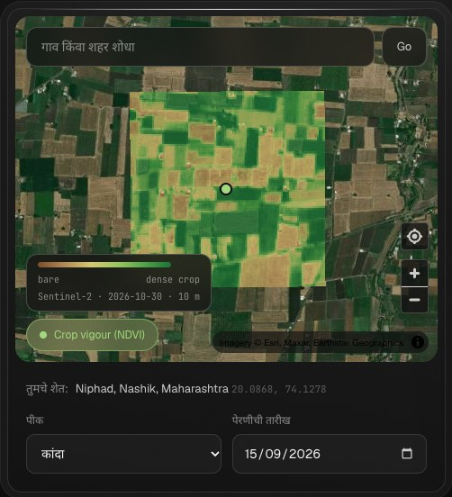
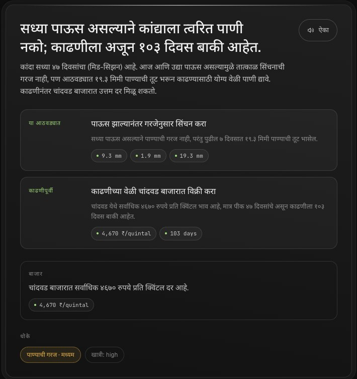
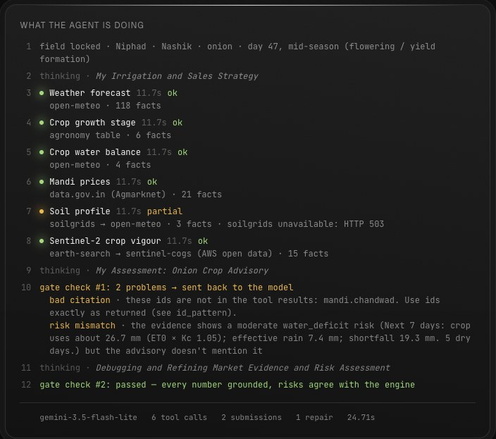
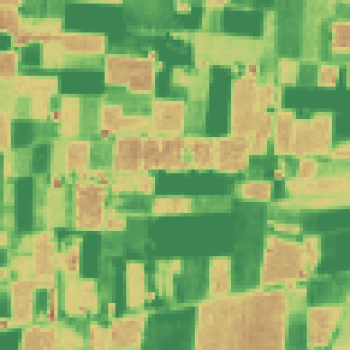
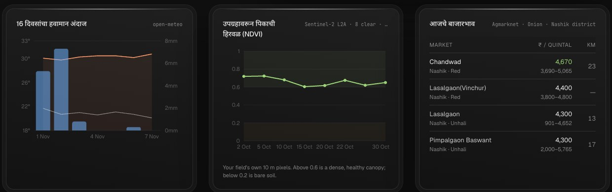

A voice-first AI agent that turns live satellite, weather and mandi data into checked, actionable advice, in the farmer's own language.

Irrigate or wait? Spray before the rain? Delay urea? Harvest now? Sell where? A wrong call costs a season, and climate volatility makes every call harder.


Live trace, left: the gate rejected a fake citation and a missing water risk. The model fixed both on its second try.


| TYPICAL ADVISORY BOT | FASAL KAVACH |
| District or generic advice | Your field's own 10 m pixels and exact-point forecast |
| Answers from model memory | Every number from a live official or open source, clickable |
| Hallucinations reach the farmer | A gate catches them; the model repairs on screen |
| Breaks when an API is down | Fallbacks, disclosed gaps, engine answer |
| English text, information only | Voice in 9 languages, timed actions in mm and ₹ |
| One user at a time | FPO watch list: many fields, riskiest first, no AI cost |